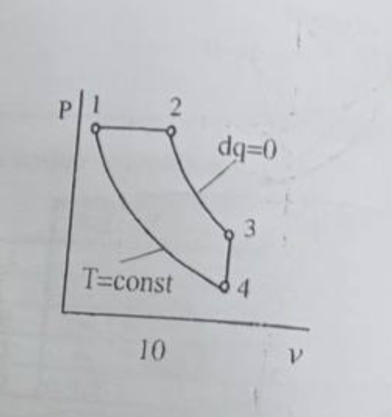
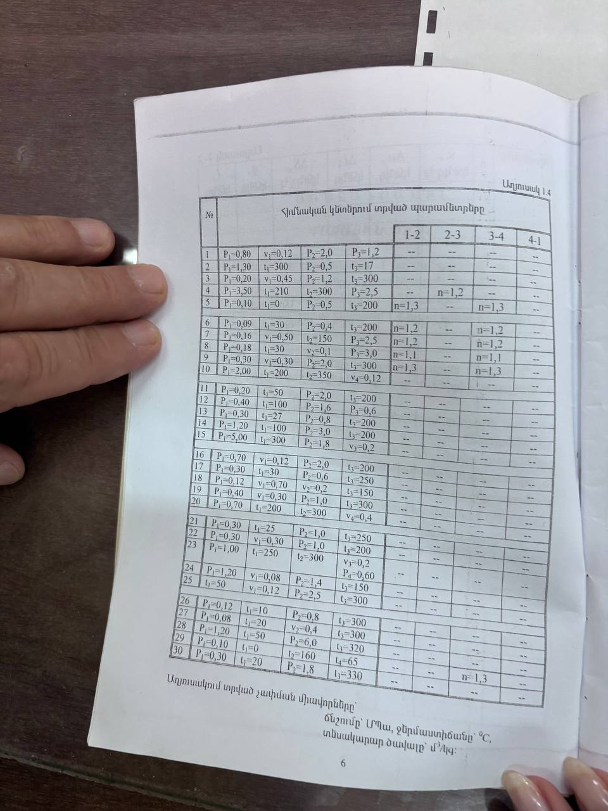

Ցիկլի հաշվարկ · տարբերակ 10 · բացատրություն
Ինչ և ինչու է արվում յուրաքանչյուր քայլում
Խնդրի պայմանը
Որոշել ցիկլի բնութագրական կետերում գազի վիճակի պարամետրերը (p, v, t, T, u, i), իսկ առանձին պրոցեսներում՝ ներքին էներգիայի և էնթալպիայի փոփոխությունները, ջերմությունը և աշխատանքը։
Ցիկլի պրոցեսները (սխեմա 10)
- 1–2՝ իզոբար (p = const), ընդարձակում
- 2–3՝ ադիաբատ (dq = 0), ընդարձակում
- 3–4՝ իզոխոր (v = const), սառեցում
- 4–1՝ իզոթերմ (T = const), սեղմում
Հաստատուններ (օդի համար)


p–v դիագրամ (մասշտաբով)
Սլաքների ուղղությունը՝ 1 → 2 → 3 → 4 → 1 (ժամացույցի սլաքի ուղղությամբ, ուստի ցիկլի աշխատանքը դրական է՝ ուղիղ ցիկլ)։ Իզոթերմը (4–1) ավելի թեք է, քան իզոբարը, բայց ավելի մեղմ, քան ադիաբատը։
1. Կետերի պարամետրերի որոշումը
Կետ 1 (տրված են p₁, t₁)
Կետ 2 (1–2 իզոբար ⇒ p₂ = p₁, տրված է t₂)
Ստուգում իզոբարի օրենքով՝ v₂/v₁ = T₂/T₁ = 623/473 = 1,317 ⇒ v₂ = 0,068·1,317 = 0,089 ✓
Կետ 4 (տրված է v₄, իսկ 4–1 իզոթերմ ⇒ T₄ = T₁)
3-րդ կետը չի կարելի գտնել առանց 4-րդի ծավալի, ուստի նախ հաշվում ենք 4-րդ կետը։
Ստուգում իզոթերմի օրենքով՝ p₁v₁ = p₄v₄ ⇒ p₄ = 2,0·0,068/0,12 = 1,13 ✓
Կետ 3 (3–4 իզոխոր ⇒ v₃ = v₄, իսկ 2–3 ադիաբատ)
Ստուգում p-ի ադիաբատի բանաձևով՝ p₃ = p₂·(v₂/v₃)k = 2,0·(0,745)1,4 = 2,0·0,662 = 1,32 ՄՊա ✓
Տրամաբանական ստուգում՝ 3–4 իզոխորում գազը սառչում է 554 Կ-ից 473 Կ, ուստի ճնշումն էլ պետք է ընկնի՝ 1,32 → 1,13 ՄՊա ✓ (կետ 4-ը դիագրամում 3-ից ներքև է)։
Կետերի աղյուսակ
| N | p, ՄՊա | v, մ³/կգ | t, °C | T, Կ | u, կՋ/կգ | i, կՋ/կգ |
|---|---|---|---|---|---|---|
| 1 | 2,0 | 0,068 | 200 | 473 | 142 | 200 |
| 2 | 2,0 | 0,089 | 350 | 623 | 248,5 | 350 |
| 3 | 1,32 | 0,12 | 280,8 | 553,8 | 199,4 | 280,8 |
| 4 | 1,13 | 0,12 | 200 | 473 | 142 | 200 |
2. Պրոցեսների հաշվարկը
Բոլոր պրոցեսներում՝ Δu = uվերջ − uսկիզբ, Δi = iվերջ − iսկիզբ։ Ջերմությունը (q) և աշխատանքը (l) կախված են պրոցեսի տեսակից։ Թերմոդինամիկայի առաջին օրենքը՝ q = Δu + l։
1–2 իզոբար (p = const)
Գազը տաքանում և ընդարձակվում է. ստացված ջերմության մի մասը (106,5) մեծացնում է ներքին էներգիան, մնացածը (≈43) ծախսվում է աշխատանքի վրա։
2–3 ադիաբատ (dq = 0)
Ջերմափոխանակություն չկա. գազն ընդարձակվելով աշխատանք է կատարում իր ներքին էներգիայի հաշվին, ուստի սառչում է (350 → 281 °C)։
3–4 իզոխոր (v = const)
Գազը ջերմություն է տալիս շրջապատին (q < 0), սառչում է, ճնշումն ընկնում է։
4–1 իզոթերմ (T = const)
Սեղմման ժամանակ գազի վրա կատարվում է աշխատանք (l < 0), և այդ ամբողջ էներգիան ջերմության ձևով հեռացվում է (q < 0), որպեսզի ջերմաստիճանը մնա հաստատուն։
Պրոցեսների աղյուսակ (կՋ/կգ)
| N | Δu | Δi | q | l |
|---|---|---|---|---|
| 1–2 | 106,5 | 150 | 150 | 43,1 |
| 2–3 | −49,1 | −69,2 | 0 | 49,1 |
| 3–4 | −57,4 | −80,8 | −57,4 | 0 |
| 4–1 | 0 | 0 | −77,3 | −77,3 |
| Σ | 0 | 0 | 15,3 | 14,9 |
3. Ստուգում
- ΣΔu = 0 և ΣΔi = 0՝ 106,5 − 49,1 − 57,4 + 0 = 0 ✓. Ներքին էներգիան և էնթալպիան վիճակի ֆունկցիաներ են, իսկ ցիկլում գազը վերադառնում է սկզբնական վիճակին։
- Σq ≈ Σl՝ 15,3 ≈ 14,9 կՋ/կգ ✓. Ցիկլի համար qց = lց։ Փոքր տարբերությունը (0,45) կլորացված հաստատուններից է՝ cp − cv = 0,29, իսկ R = 0,287 (Մայերի հավասարում՝ cp − cv = R)։ Այն ամբողջությամբ գալիս է 1–2 իզոբարից՝ 150 − 43,05 = 106,95 ≈ 106,5։
Լրացուցիչ՝ ցիկլի ՕԳԳ
Ինչպես լուծել նման խնդիրները
- Սկզբում գրել, թե որ պրոցեսը որ կետերի միջև է, և ինչ է դրանից հետևում. իզոբար՝ p հավասար, իզոխոր՝ v հավասար, իզոթերմ՝ T հավասար։
- Գտնել այն կետը, որտեղ երկու պարամետր հայտնի է, և pv = RT-ով գտնել երրորդը։ Հետո շարժվել ցիկլով. երբեմն ճիշտ է գնալ «հակառակ» կողմով (այստեղ՝ 1 → 4 → 3)։
- Ադիաբատի համար՝ pvk = const, Tvk−1 = const։
- Բանաձևերում միշտ T-ն Կելվինով (pv = RT, RT·ln…), իսկ u = cvt և i = cpt բանաձևերում՝ t-ն °C-ով։
- Վերջում ստուգել ΣΔu = 0 և Σq ≈ Σl։